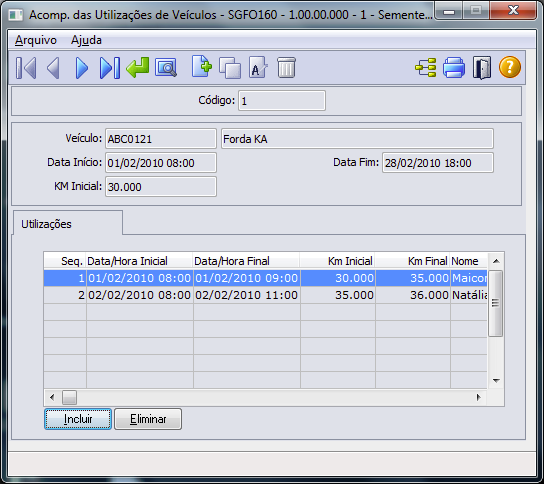

Tela_movimentacao1
Movimentação 1
Recebe link de cada movimentação do sistema
Explicações individuais de como realizar cada movimentação

<Print Screen da Tela, opcional>
Pré Requisitos:
Condutor e veiculo previamente cadastrado.
A tabela a seguir descreve resumidamente os elementos desta janela.
Campo |
Descrição |
Código |
Neste campo deve ser inserido o código da utilização. Na inclusão por default o sistema sugere um número sequencial e é aconselhável não alterá-lo. Uma vez inclusa a utilização, não é permitida a alteração desse campo. |
Veículo |
Selecionar o veículo para o qual deseja fazer o controle das utilizações. |
Data Início |
Neste campo deve ser inserida a data início do controle de utilização. A data deve pertencer a um período aberto na função Fechamentos. Inicialmente o sistema exibe a data atual, a qual pode ser alterada. |
Data Fim |
Neste campo deve ser inserida a data fim do controle de utilização. A data deve pertencer a um período aberto na função Fechamentos. |
Km Inicial |
Neste campo é inserido automaticamente o km inicial para acompanhamento da utilização do veículo. Esse campo é atualizado conforme o campo hodômetro do veículo selecionado. |
Ações: <Descrição dos comandos de interação>
Botão Descrição
Incluir Vai para a Janela Inclui Utilização.Nesta janela é possível incluir a utilização do veículo.
Eliminar Com o acionamento deste botão é possível efetuar a eliminação de uma determinada utilização de veículo.
Restrições:
- Não é permitida a inclusão de uma utilização de veículo sem informar o km final.
- O km final informado não pode ser inferior ao km inicial.
- Não é permitida a inclusão de uma utilização de veículo para um condutor inexistente.
- Não é permitida a inclusão de um utilização de veículo para uma data fora do período de controle das utilizações para o veículo.
- A Data/Hora Final pode não poder inferior a Data/Hora Inicial.
- Ao incluir uma utilização de veículo o sistema SGF atualiza automaticamente o hodômetro do veículo relacionado e caso exista pneus relacionados para esse veículo em controle de pneus, a km desses pneus também são atualizadas.
Como fazer:
Explicação de como manusear algumas funcionalidades consideradas complexas. P.e: Como desfazer uma venda; Como emitir uma segunda via da nota fiscal; Como consultar as faturas que estão vencendo em determinado dia...
Pode ser formatado no modo “Pergunta e Resposta”.
Created with the Personal Edition of HelpNDoc: Free Web Help generator